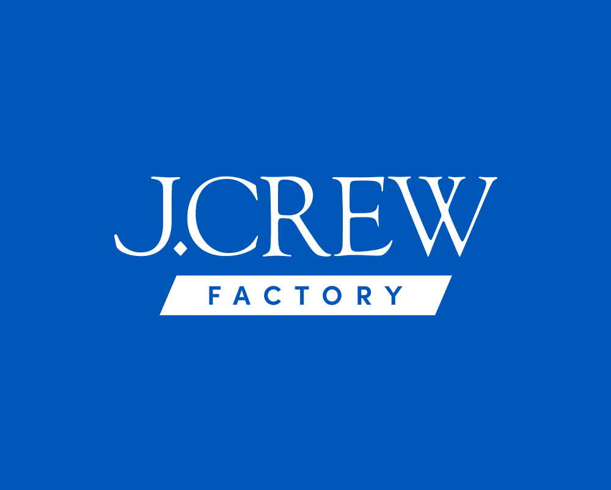
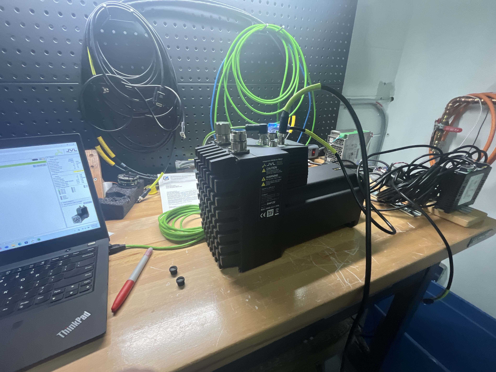

Mechanical Engineering • Quinnipiac University
Mechanical Engineering Student
Mechanical Engineering student at Quinnipiac University with experience supporting technical teams and end users through mechanical design, testing, and hands-on problem solving. Skilled at translating technical concepts into practical solutions and working cross-functionally to improve system performance and usability.
Highlights
- Summer Project Intern, Automation Associates (Summer 2025)
- Summer Intern, Automation Associates (Summer 2024)
- FIRST Robotics Mentor (Teams 177 Bobcat Robotics and 429 Two Many Bobcats)
Quick Contact/Info
About
I’m a Mechanical Engineering student at Quinnipiac University interested in how engineering decisions translate into real products and real user experiences. My experience ranges from mechanical design and durability testing during my internship with Automation Associates to customer-focused product consulting while working in retail. Through these roles, I’ve developed an interest in several areas including product development, technical sales, and product-focused engineering work. I enjoy understanding how systems work, simplifying complex problems, and helping connect technical solutions with real-world use.
Education
Quinnipiac University • Hamden, CT
- Bachelor of Science — Mechanical Engineering
- May 2027 (anticipated)
Core Strengths
- Mechanical design and prototype development using SolidWorks
- Hands-on testing and durability validation of mechanical systems
- Troubleshooting mechanical systems and identifying root causes
- Translating technical concepts for both engineers and customers
- Product-focused problem solving and performance improvement
Experience

Summer Project Intern - Automation Associates
Trumbull, CT • 06/2025 – 08/2025
- Programmed motors and worked with PLC systems to support automation and control projects.
- Assisted in creating wiring diagrams for clients and wiring projects in unipolar, polar, and bipolar configurations while recommending the optimal setup based on project requirements and performance needs.
- Collaborated with clients and team members to ensure accurate implementation and efficient system functionality.
- Worked closely with electrical, software, and manufacturing teams to refine designs and improve testing processes
Summer Intern - Automation Associates
Trumbull, CT • 06/2024 – 08/2024
- Programmed and configured demo applications for internal systems and customer projects.
- Reprogrammed, tested, and troubleshot motor modules to ensure optimal performance.
- Conducted return merchandise authorization testing for customers, diagnosing issues and identifying root causes.
- Developed detailed procedures and documentation for future troubleshooting and process improvements.

FIRST Robotics Mentor
South Windsor, CT • 09/2024 – present
177 Bobcat Robotics and 429 Two Many Bobcats
- Mentored high school students in developing technical and professional skills, fostering collaboration and innovation throughout the season.
- Assisted students with design work, providing guidance on engineering concepts and CAD development
Admissions Ambassador - School of Computing and Engineering
Hamden, CT • 09/2025 – Present (Part-Time)

Sales Associate
West Hartford, CT • 06/2024 – Present (Part Time)
Ice Cream Scooper
Eastham, MA • 06/2020 – 08/2023 (Seasonal)
Engineering Projects
Selected projects demonstrating mechanical design, analysis, testing, and problem-solving.
Tripteron Robot
Automation Associates • Summer 2025
- Programmed the Tripteron Robot to perform different motions for a demonstration for the client.
- Used ePLC with JVL motors and used a Trio controller with C++.
- Made the robot 'jump' and 'dance'.
Tested and Programmed Rotary Table Options on JVL Motors
Automation Associates • Summer 2024
- Programmed the motor to learn and understand the 5 different modes for Rotary Table Option.
- 1. Single Turn CW, 2. Single Turn CCW, 3. Shortest Path, 4. Multiturn CW Rotation, 5. Multiturn CCW Rotation.
- Learned and understood these modes to teach customers and to set up demos for potential clients.
Conducted RMAs on JVL Motors
Automation Associates • Summer 2025 and 2024

- Acquired customers 'defective' motors and created a test procedure to find the root cause of issues.
- Created testing code that each motor would be subjected to to create possible errors, such as an encoder failure, overheating, or external torque on the shaft.
- Software issues were dealt with in-house, where I would fix programming and software issues. The mechanical or physical damage was dealt with by contacting the manufacturer and working with them on the best course of action.
Women-Specific Hockey Helmet Design
Intro to Mechanical Engineering Design • In Progress
- Developing a helmet concept designed to accommodate ponytails without compromising safety or fit
- Researching helmet safety standards, including HECC and CSA impact requirements
- Analyzing head geometry, pressure points, and retention system performance
- Designing adjustable rear-shell geometry and retention components in CAD
- Evaluating tradeoffs between comfort, ventilation, structural strength, and impact protection
- Applying user-centered design to address gaps in existing women’s hockey equipment
Stress & Deflection Analysis of Structural Members
Mechanics of Materials
- Analyzed beams and structural members under combined loading conditions
- Constructed shear and bending moment diagrams to identify critical stress locations
- Calculated normal stress, shear stress, and deflection using analytical methods
- Evaluated factor of safety and material performance under loading scenarios
Kinematic & Dynamic System Modeling
Dynamics & MATLAB Applications
- Modeled motion of mechanical systems using kinematic relationships and vector analysis
- Applied Newton’s Second Law and energy methods to evaluate forces and system behavior
- Developed MATLAB scripts to compute velocity, acceleration, and dynamic response
- Analyzed system motion to predict performance and identify peak loading conditions
Engineering Coursework
Mechanical Engineering coursework at Quinnipiac University.
Mechanics & Design
- Fundamentals of Engineering Mechanics
- Mechanics of Materials
- Dynamics
- Computer Aided Design
- Manufacturing / Machine Design
Mathematics & Analysis
- Calculus I
- Calculus II
- Calculus III
- Matrix Algebra / Differential Equations
- Applied Statistics
Programming & Computing
- Introduction to Programming for Engineers
- Introduction to Circuits
Professional & Supporting Courses
- Engineering Economics
- Professional Development Seminar
- Engineering Professional Experience
Engineering Labs
- Mechanics of Materials Lab
- Introduction to Circuits Lab
- Machine Design and Manufacturing Lab
Leadership & Involvement
Member
Society of Women Engineers • 2023 – Present
Participate in leadership and networking events focused on supporting women pursuing careers in engineering.
Member
Women in STEM • 2024 – Present
Participate in leadership and networking events focused on supporting women pursuing careers in STEM-related fields.